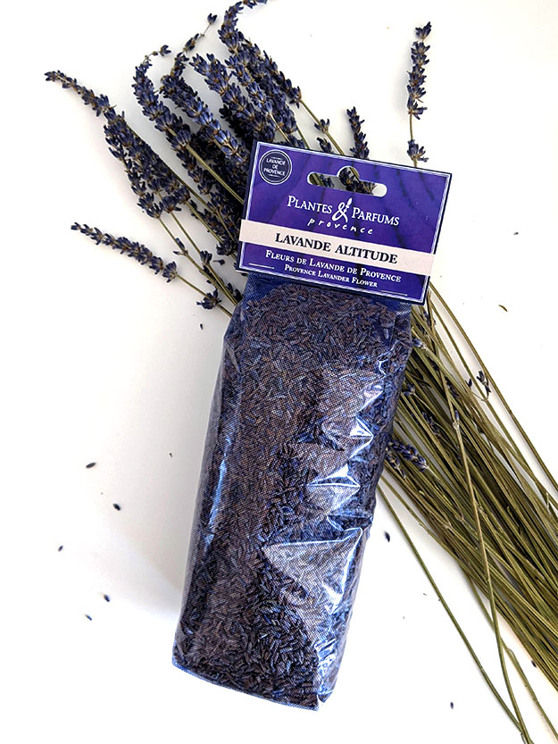
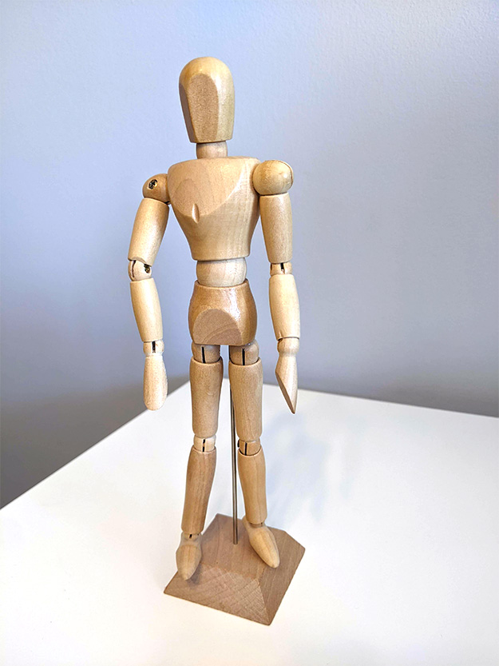
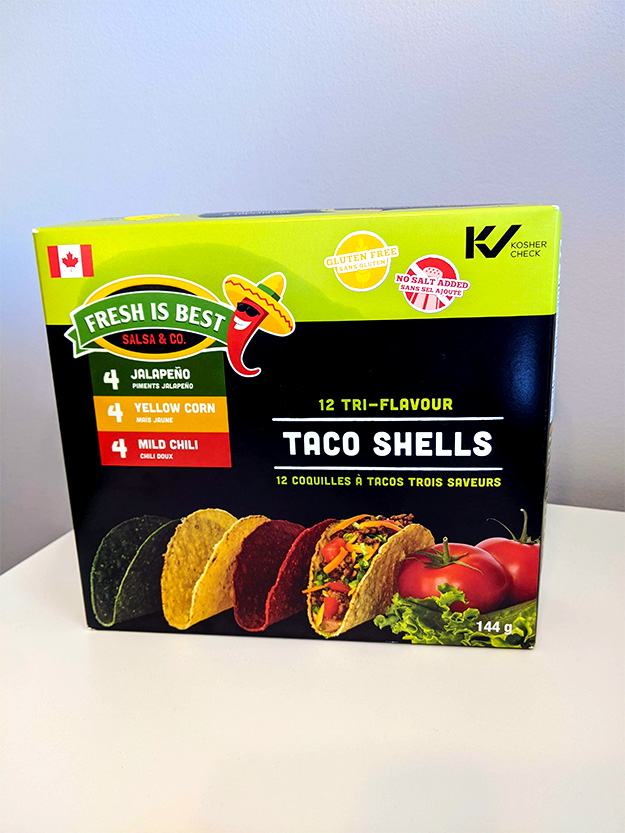
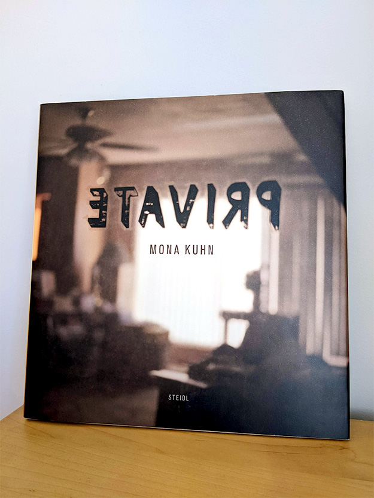

How does globalization affect my daily life?
Globalization enables me to live the way I do. It is seen is the everyday objects around me: from what I eat, to what I use and what I enjoy. Every aspect of my life, from school and work to daily life and leisure is made possible because of the wide variety of products (and services) I can access. This is enabled by international trade and extensive transportation networks.
Lavandar flowers from Provence
- Farmers in Provence grew and harvested the flowers
- The company Plantes & Parfums in Provence makes and sells this product, which is marketed and exported to Canada
- The product is transported to Canada by ship or plane and then by truck to the local retailer in Ottawa
- The paper, cellophane and staples may be imported from other countries
- The design of the packaging and the assembly of this product may have been outsourced
- Can be considered a cultural good as lavender is associated with Provencal France
Artist's wooden mannequin
- The raw material wood is a downstream product of logging, which has led to deforestation and loss of biodiversity
- The metal hardware used to attach the parts came from mining, which depletes the Earth's natural resources
- Both logging and mining are global industries, and Canada is a major producer and exporter
- Product manufacturing can be done in several stages in different countries depending on where cost is lowest
- For example, the production of the wooden parts may be done in one country and then transported to another country for assembly
- This keeps prices low for companies and consumers.
Kosher Taco Shells from B.C.
- Taco shell is a Mexican food but this product is produced in B.C. and tacos is a popular food item for Canadians
- The product is also marketed as Kosher, a Jewish concept. This is an import of cultural goods leading to (some) cultural convergence
- The corn is likely domestically sourced as Canada produces a lot of corn
- But other ingredients used (e.g. jalapeno, chili) are most likely imported
- And the graphic design for the packaging and the production of the box may be outsourced or designed in Canada
HP Inkjet Printer
- Hewlett-Packard (HP) is an American company, but they can own production facilities anywhere in the world
- The materials and parts are likely sourced from around the world, e.g. plastic shell and parts, metal print head, driver (software) to convert digital file into printer language
- Hence, the manufacturing inputs come from global primary industries such as mineral and oil extraction and basic plastic/metal processing industries
- The products is also exported to the rest of the world.
Photography book: Private by Mona Kuhn
- Kuhn, a German photographer, traveled to the Mojave Desert in California to photograph this series.
- This is an example of international travel.
- The book is a collaboration between many people: photographer, editor, publisher, writer, book designer, etc., possibly from different countries
- The raw materials, paper and ink, may be sourced outside Germany
- The product is distributed around the world, not only the physical book but also the cultural good (art).
The everyday objects around me are the direct result of the exchange of goods and services between different countries. A product may be manufactured in Canada, but the raw materials are sourced elsewhere. Or the product may be manufactured elsewhere using some raw materials and/or parts from other countries, and then imported into Canada. There is a complex web of producers and manufacturers behind most of the products I use, and my way of life is heavily dependent on the people and the resources of the Earth.The world is intricately connected and is indeed a global village.